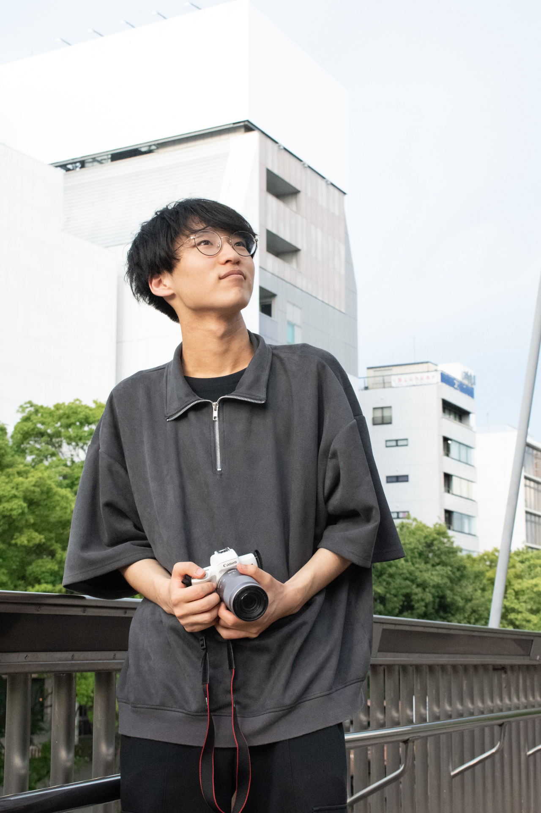

武谷 信次郎
Shinjiro Taketani
Interactive System / CG & VFX / Game Development
Skills
Programming & Engine
実装・ゲーム開発- C/C++
- Unity (C#)
- OpenGL
- OpenCV
Interactive & Hardware
センサ・デバイス制御- TouchDesigner
- Arduino / M5Stack
3DCG & Visual Arts
モデリング・VFX・映像- Blender
- After Effects
- Premiere Pro
Career
-
2022/4
愛知工業大学 情報科学部 メディア情報専攻 入学
-
2024/4
CGメディア研究室（水野慎二研）配属
-
2026/3
愛知工業大学 情報科学部 メディア情報専攻 卒業
-
2026/4
愛知工業大学大学院 経営情報科学研究科 在籍中
Awards & Activities
-
2026/9
エンタテインメントコンピューティング2026 (EC2026) 作品出展
出展作品：『乾杯の音頭は破壊から』『キューブでポン！』
-
2026/6
マルチメディア、分散、協調とモバイル (DICOMO2026) シンポジウム（デモ発表）
武谷信次郎，水野慎二：ユーザの手の動きに追従する動的な影の制御手法に関する研究
野口優秀賞 DCC研究会優秀賞 -
2025/12
WISS2025 第33回インタラクティブシステムとソフトウェアに関するワークショップ（デモ発表）
武谷信次郎，水野慎二：ユーザの手の動きに追従する動的な影の制御手法に関する研究
チームラボ賞 対話発表賞 -
2023~
Life is Tech! 株式会社 長期インターン
映像メンター、AIメンター、カメラマンとして活動
-
2022–2024
東京ゲームショウ（2022, 2023, 2024）作品出展
-
2023–2026
BitSummit（2023, 2025, 2026）作品出展
-
2024
BIC Festival（韓国）作品出展
-
2023
ゲームマーケット東京 作品出展